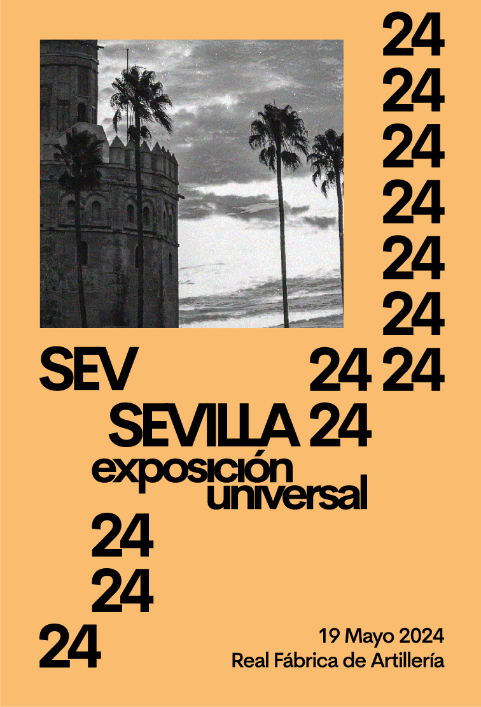
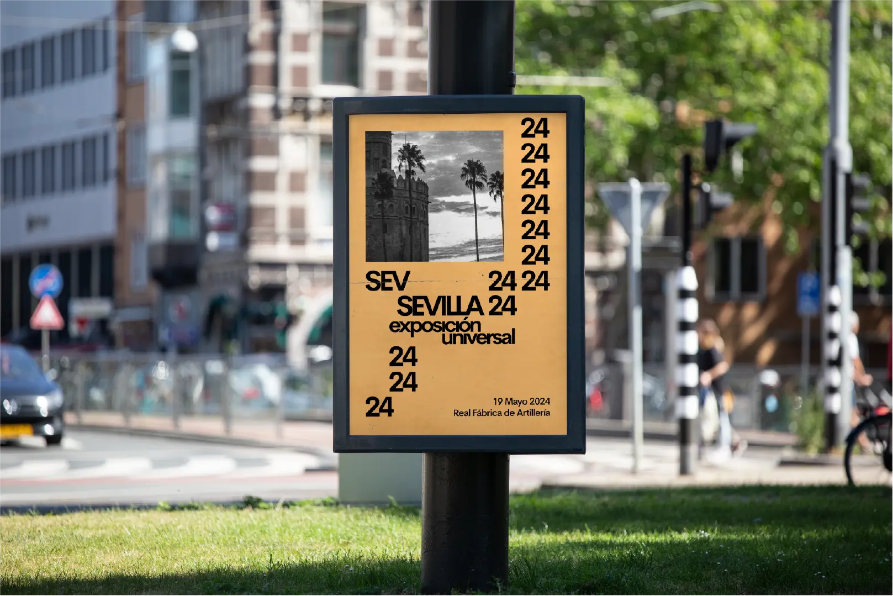

Sevilla 24
Identidad visual para “Sevilla 24”, un evento cultural celebrado en Sevilla cuyo propósito es poner en valor el arte y el diseño andaluz contemporáneo. El proyecto busca construir una imagen reconocible y coherente que refuerce la visibilidad del talento local, conectando tradición y actualidad a través de un sistema gráfico versátil y adaptado al contexto cultural de la ciudad.
El concepto gráfico se desarrolla a partir de un lenguaje visual pensado para adaptarse a cualquier formato, garantizando su aplicación en múltiples soportes sin perder consistencia. La paleta de colores está inspirada en el color de la ciudad de Sevilla lanzado por Pantone, el cual toma como referencia su luz, su arquitectura y su identidad cultural, generando una atmósfera visual que evoca el carácter único del entorno.


